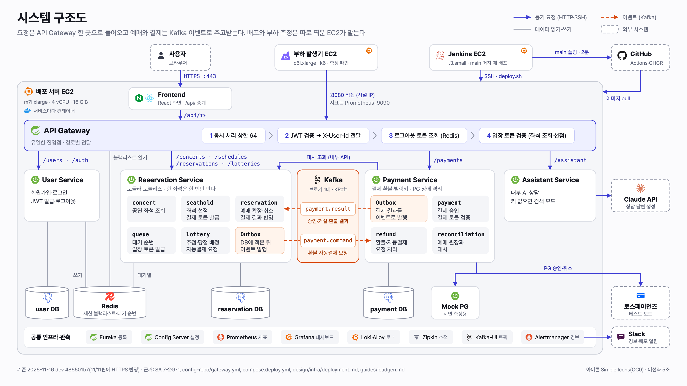
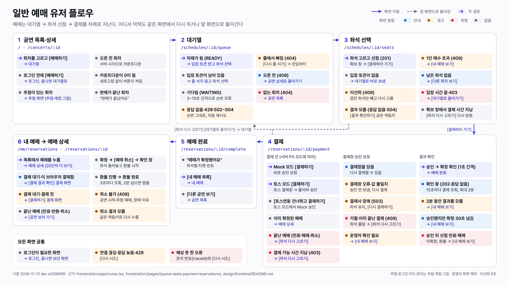
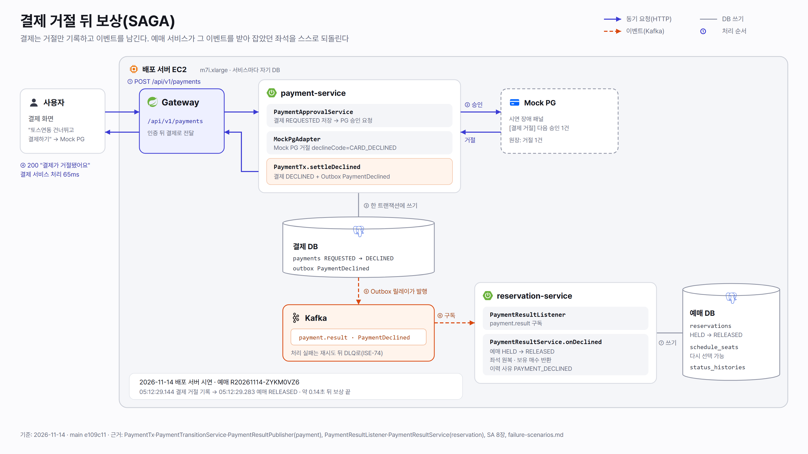
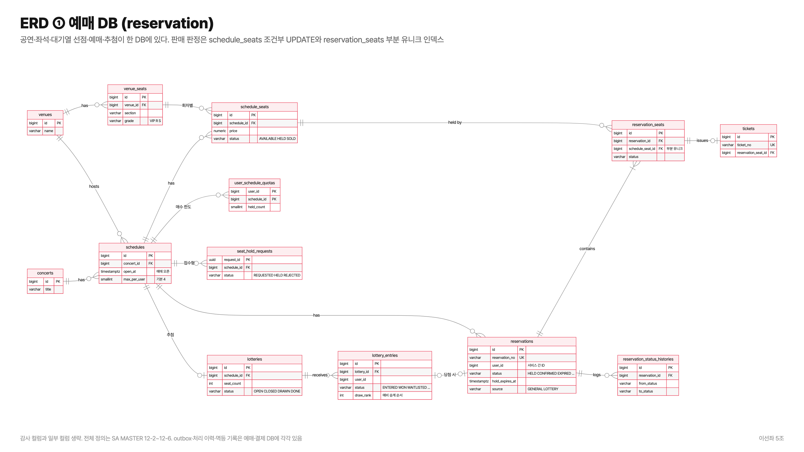
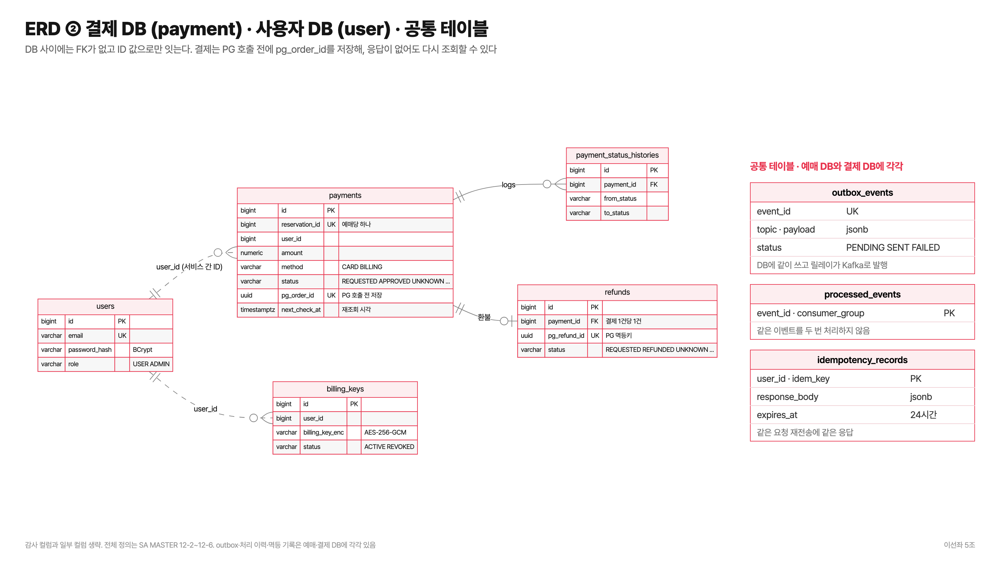

내일배움캠프 단기심화 10기 최종 프로젝트
티켓 오픈 정각에 수천 명이 몰려도,
한 좌석은 한 사람에게만 파는 콘서트 예매 서버
한 좌석은 한 사람에게만 파는 콘서트 예매 서버
이선좌
| 흔히 쓰는 방식 | 이선좌의 선택 | 근거·결과 |
|---|---|---|
| Redis 분산 락으로 좌석 판정 | DB 조건부 UPDATE로 판정, 부분 유니크 인덱스를 마지막 방어선으로 배치 | 중복 판매 0건, Redis 장애와 판매 기록 분리 |
| PG 응답 시간 초과는 결제 실패 | "결과 모름(UNKNOWN)"으로 보류 후 재조회, 재시도 요청이 기존 결제를 이어받지 않게 차단 | 장애 주입 중에도 PG 원장 = DB, 중복 승인 0건 |
| 입구 요청률 제한, 순번 폴링 간격 늘리기 | Gateway 맨 앞 동시 처리 상한 64, 리틀의 법칙으로 값 산출 | 초당 2,000건에서 굿풋 +30%, p95 571 → 87ms |
| 조정자가 지휘하는 오케스트레이션 SAGA | 결과 이벤트 구독형 코레오그래피 SAGA, 서명된 결제 토큰으로 순서 보장 | 결제 거절 후 약 0.14초 만에 좌석 반환 |
| 기능마다 서비스 분리(5개) | 서비스 3개 + 모듈러 모놀리스, 분리 시점을 측정 지표로 정의 | 대기열 분리 시 장애 격리 효과 없음을 근거로 판단 |
| 문서·이론값을 그대로 채택 | 설정값은 배포 서버 측정으로 결정, AI 추천도 측정 후 채택·거부 | SKIP LOCKED 성공 83 → 56건 확인 후 거부 |
| 발제 요구사항 | 이 도메인에서 푼 방식 |
|---|---|
| 트래픽 스파이크 | 대기열, 좌석 배치 캐시, 동시 처리 상한, k6 부하 테스트 |
| 동시성 | 조건부 UPDATE, 부분 유니크 인덱스, 매수 한도 |
| 분산 트랜잭션 | 예매↔결제 SAGA, 보상 트랜잭션(좌석 반환·환불) |
| 장애 격리 | Circuit Breaker, Bulkhead, Outbox, 멱등 처리, DLQ |
| MSA 구성 | Spring Cloud Gateway·Eureka·Config Server, 서비스별 DB |
| Synthetic Data | LLM이 설계한 페르소나 8개로 가상 사용자 3,000명 생성 |

| 이름 | 역할 | 담당 업무 |
|---|---|---|
| 이강민 | 조장 · 발표 |
|
| 안준현 | 팀원 |
|
| 최권우 | 팀원 |
|
| 반효승 | 팀원 |
|
| 권영은 | 팀원 |
|
| 주차 | 활동 |
|---|---|
| 1주차 10/26 ~ 11/1 | SA 1차 피드백 반영, 공통 모듈·인증·Gateway·Config 서버 구축(M1), 서비스 간 계약 4종 확정, 추첨 설계 결정 |
| 2주차 11/2 ~ 11/8 | 일반 예매 한 흐름 연결(M2), 추첨 필수 기능 격상, EC2 첫 배포(11/4), 실패 경로·장애 주입·MVP 시연(M3) |
| 3주차 11/9 ~ 11/15 | 고도화(M4): Gateway 과부하 측정·개선, 토스페이먼츠 연동, 취소·환불, 자동결제 완료율 개선, Synthetic Data 3,000명 측정 |
| 4주차 11/16 ~ 11/19 | HTTPS 배포, 좌석 선점 밤샘 측정 결과 반영, 브로셔·README·결과보고서 작성, 최종 발표(11/19) |




| 메서드 | 경로 | 설명 |
|---|---|---|
| User | ||
| POST | /api/v1/users | 회원가입 |
| POST | /api/v1/auth/login | 로그인 |
| POST | /api/v1/auth/refresh | 토큰 재발급 |
| POST | /api/v1/auth/logout | 로그아웃 |
| Payment · Assistant | ||
| POST | /api/v1/payments | 결제 승인 |
| GET | /api/v1/payments/{id} | 결제 상태 |
| POST | /api/v1/payments/billing-keys | 자동결제 카드 등록 |
| POST | /api/v1/assistant/messages | AI 상담 |
{status, message, data, traceId} · 실패 {status, code, message, errors, traceId}/api/v1 생략 · 전체 명세는 /api/docs(Swagger UI)| 메서드 | 경로 | 설명 |
|---|---|---|
| Reservation | ||
| GET | /api/v1/concerts | 공연 목록 |
| POST | /schedules/{id}/queue | 대기열 진입 |
| GET | /schedules/{id}/queue/me | 내 순번 |
| POST | /schedules/{id}/queue/token | 입장 토큰 발급 |
| GET | /schedules/{id}/seats | 좌석 배치·상태 |
| POST | /schedules/{id}/reservations | 좌석 일괄 선점 |
| GET | /reservations/{id} | 예매 상세·티켓 |
| POST | /reservations/{id}/cancel | 예매 취소 |
| POST | /lotteries/{id}/entries | 추첨 응모 |
| GET | /lotteries/{id}/entries/me | 응모 결과 |
| 기술 | 구현 방법 |
|---|---|
| Redis + Lua | 대기열 번호표(seq) 발급과 입장 판정(seq ≤ admitted)을 한 번의 원자 실행으로 처리, 입장 토큰 발급 |
| PostgreSQL 조건부 UPDATE | AVAILABLE일 때만 HELD로 변경, 좌석 ID 오름차순 잠금으로 교착 방지, 잠금 대기 최대 50ms |
| Kafka + Outbox · 처리 이력 · DLQ | DB 변경과 이벤트를 한 트랜잭션에 기록 후 릴레이 발행, 같은 이벤트 중복 처리 차단, 3회 재시도 뒤 DLQ |
| 코레오그래피 SAGA | payment.result로 예매 확정·좌석 반환, payment.command로 환불·자동결제 요청 |
| Resilience4j | Gateway 동시 처리 상한 64, Redis 장애 차단기와 과부하 집계 분리, PG 허가 그룹을 일반·자동결제로 분리 |
| JWT · ES256 · AES-256-GCM | 입장 토큰·결제 토큰 키 분리와 typ·aud 검증, 결제 토큰은 예매 서비스 개인키로 서명, 빌링키 암호화 |
| Prometheus · Grafana · Loki · Zipkin | 지표·로그·추적을 같은 시간축에서 확인, 알림 규칙 37개와 알림 테스트 64건 |
| k6 + 별도 EC2 | 같은 VPC의 부하 발생기에서 시나리오 19개 반복 측정, 같은 조건 2회씩 비교 |
| 문제 | 구현 방법 | 결과 |
|---|---|---|
| 1요청 폭주 | 대기열로 입장 순서 결정, Gateway 동시 처리 상한(64) 도입, 넘친 요청은 인증 전 즉시 거절 | 초당 2,000건에서 p95 571 → 87ms, 굿풋 +30% |
| 2같은 좌석 동시 클릭 | 판매 판정을 Redis 대신 DB 조건부 UPDATE로 처리, 부분 유니크 인덱스를 마지막 방어선으로 배치 | 모든 배포 측정에서 중복 판매 0건 |
| 3결제 결과 모름 | 응답이 없으면 실패로 단정하지 않고 "결과 모름(UNKNOWN)"으로 보류 후 재조회, 예매와 결제는 이벤트(SAGA)로만 연결 | 결제 서버 강제 종료에도 PG 원장 34건 = 결제 DB 34건 |
| 4공정성 | 추첨 예매 도입, 당첨 시 사전 등록 카드로 자동결제, 실패 시 예비 당첨자가 승계 | 당첨 약 2,000건 10분 안에 100% 결제 |
| 지표 | 이전 | 이후 | 변화 |
|---|---|---|---|
| Gateway 굿풋(초당 2,000건) | 1,304/s | 1,696/s | 30% 증가 |
| Gateway p95(초당 2,000건) | 571ms | 87ms | 85% 감소 |
| Gateway 메모리 초과 재시작 | 3회 | 0회 | 재시작 없음 |
| 좌석 선점 p95(사용자 3,000명) | 242.7 · 196.0ms | 44.5 · 31.4ms | 77~87% 감소(2회씩) |
| 자동결제 10분 안 완료율 | 92.4~93.4% | 100% | 기준 95% 통과 |
| 자동결제 처리 속도 | 초당 3.2건 | 초당 9.4건 | 약 2.9배 |
| 연타 시 자기 요청 409(로컬 k6) | 2,416명 | 0명 | 결함 제거 |
| 자동 배정 확정(인덱스 추가) | 433건 | 2,248건 | DB CPU 280% → 18.2% |
| 피드백 | 반영 내용 | 상태 |
|---|---|---|
| PG 호출 중 서버가 죽으면 REQUESTED로 방치, 재확인은 초 단위 Kafka·분 단위 스케줄러로 분리 | 경과한 REQUESTED도 재확인 대상, 10초×6회 → 1분 → 5분 → 15분 → 운영자 확인. Kafka는 1·2·4초 재시도 뒤 DLQ | 반영 |
| 환불도 상태를 나누고 중복 요청을 전제로 설계 | refunds 테이블과 상태 5개, 결제당 환불 1건 유니크, PG 멱등키 | 반영 |
| 결제 토큰 만료를 선점 만료보다 앞당김 | 결제 토큰 만료를 선점 만료 10초 전으로 설정 | 반영 |
| 입장 토큰과 결제 토큰의 서명 키 분리 | 키 분리와 typ·aud 검증, 결제 토큰은 ES256 비대칭 서명까지 확장 | 반영 |
| 접수형 선점은 실패 상태를 저장할 곳이 없음 | 접수 요청 행과 outbox를 한 트랜잭션에 기록 | 반영 |
| 레이스 컨디션 해결 방식 결정, 부분 유니크 문서화 | 조건부 UPDATE + 부분 유니크 유지, 분산 락 미채택 근거 기록, 잠금 대기 50ms | 반영 |
| Redis 느려짐은 짧은 타임아웃·서킷 브레이커로 차단 | Gateway 인증 Redis 차단기와 과부하 집계 분리, 로그아웃 토큰 확인은 fail-closed로 변경 | 변경 |
| Java 힙 상한과 EC2 메모리 계산, 단일 인스턴스 한계 | 서비스별 메모리 상한·-Xmx 지정, 단일 EC2 한계를 결정 기록에 명시 | 반영 |
| 피드백 | 반영 내용 | 상태 |
|---|---|---|
| 서버와 부하 발생기의 시간 동기화(NTP) | 두 EC2 모두 chrony로 Amazon Time Sync에 동기화 확인, 오차 기록. 브라우저는 서버 시각으로 보정 | 반영 |
| 레이트 리미터 도입 | 사용자 단위 요청 제한 대신 Gateway 동시 처리 상한 64와 503·재시도 시간 응답 | 대체 |
| 벌크헤드로 자원 격리 | PG 허가 그룹을 일반 결제·자동결제로 분리, DB 커넥션 풀 분리는 미적용 | 부분 |
| AI 제안 | 판단 근거 |
|---|---|
| 대기열 서비스 분리 | 도메인 데이터가 없고 멈추면 예매도 멈춰 장애 격리 효과 없음 |
| 오케스트레이션 SAGA | 참여 서비스가 둘뿐이라 결과 이벤트 구독으로 충분 |
| 재시도가 기존 결제를 이어받아 승인 | 이전 요청의 PG 호출 여부를 확인할 수 없어 이중 승인 위험 |
| SKIP LOCKED("손해는 드물다") | 측정 결과 성공 83 → 56건으로 감소 |
| 이름 | 평가 점수 (10점 만점) | 평가 점수 사유 (잘한 점, 아쉬운 점, 느낀 점, 개선할 점) |
|---|---|---|
| 이강민 | ||
| 안준현 | ||
| 최권우 | ||
| 반효승 | ||
| 권영은 |